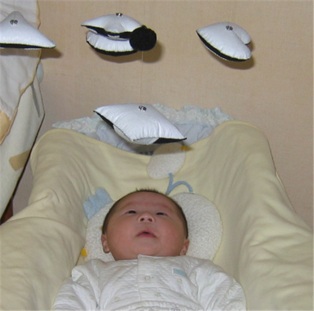
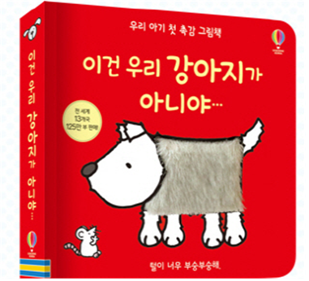
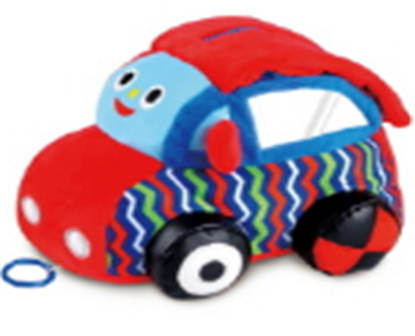
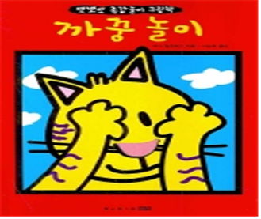

갓 태어난 신생아도 정서를 조절하기 위한 전략을 사용할 수 있는데， 4~6개월이 되면 영아는 유쾌하지 않은 자극에 대해 자신의 얼굴을 돌리거나 눈을 감기도 한다. 생후12개월 동안 영아의 정서조절 전략은 지속적으로 발달한다. 영아는 자신의 손가락을 빨거나 자신의 몸을 앞뒤로 흔들거나 입술을 깨물거나 관심을 다른 데로 돌리는 방법을 사용하여 자신의 부정적인 정서를 감소시키기도 한다.
또한 운동능력이 발달함에 따라 영아는 자극을 회피하거나 어머니나 주변의 편안함을 주는 대상에게 가까이 이동함으로써 마음을 조절한다. 18개월이 되면 영아는 자신의 정서를 숨기거나 어머니가 함께 있을 때에만 울음을 터트리는 등 상황에 맞추어 행동을 표현하기도 하며， 24개월이 되면 언어를 사용하여 자신의 정서상태나 자신에게 정서를 유발시키는 환경을 조절하도록 유도할 수 있다.

영아의 정서조절에는 양육자가 중대한 역할을 하게 된다.
영아가 부정적인 정서를 경험할 때 양육자는 부정적인 정서를 유발하는 요인들을 제거하거나 영아를 안고 흔들거나 영아에게 편안함을 제공함으로써 정서를 조절할 수 있도록 돕는다. 또한 양육자는 사회에서 용인된 정서표현 규칙을 따르도록 정서에 따라 강화하거나 억제시키는 사회화를 통하여 영아의 정서조절에 영향을 미치게 된다.
정서표현은 특정 상황에서 자신의 인식한다.
어떤 상황에 적합한 표현할 때는 사회의 규칙을 따르게 된다. 영아가 긍정적인 정서를 보일 때는 이를 강화하고 격려할 것이며, 분노 같은 부정적인 정서를 보일 때는 감소시키고 다른 방식으로 표현하도록 시도해야 자기조절을 수긍한다. 이와 같이 양육자와 영아간의 사회적 상호작용을 통해 영아는 점차 그 문화권에서 허용하는 적응력을 발휘하게 된다.
영아는 다양한 감각을 이용한다.
발달특성을 기초로 모든 감각을 사용하여 주변세계를 탐색하고 개념을 형성하는 시기이다.신체를 이용하여 보고, 만지고, 듣고, 소리, 냄새 등 가장 기초적인 다양한 경험을 할 수 있도록 배려해야 한다.
영아기에 적합한 그림책은 다음과 같다.
일반적으로 접하는 종이로 된 책, 외형적으로 다양한 질감 형태를 지니는 그림책이 알맞다. 내용은 짧고 단순한 문장으로 표현된 이야기가 갖는 반복적인 운율과 리듬감에 흥미를 느끼고 반응한다. 예를 들면, ‘이건 우리 강아지가 아니야’는 표지 강아지 모습의 일부분에 털로 구성하여 질감과 촉감을 느낄 수 있도록 하였다.

이 시기는 책을 펼치면 내용물이 튀어나오는 입체 그림책(pop-up book), 버튼을 누르면 소리가 나거나 구멍이 있는 부분에 손가락을 끼워 조작하는 그림책이 좋다. 또한, 스티커를 이용하여 꾸미거나 그림을 그릴 수 있도록 제작된 책, 계단식 그림책, 누워서 볼 수 있는 모빌형태의 그림책, 병풍처럼 세워 놓고 접을 수 있는 장난감 그림책(toy book), 들춰서 볼 수 있는 책(life-the-flap book), 세탁할 수 있는 헝겊 그림책, 물에서 가지고 놀 수 있는 무독성 비닐 그림책, 부드러운 스펀지 그림책, 운율과 노래가 들어간 그림책, 친숙한 장면의 큰 그림책 등 각 장마다 그림이 있고, 그림은 내용을 정확히 반영해 주는 것이 알맞다.


영아는 그림책을 만지고 탐색하며 조작적 행위를 놀잇감으로 인식하고 반응할 뿐이지만 주변의 보모 및 교사의 반응과 요구에 따라 친숙한 그림에 관심을 보이고 귀를 기울이기 시작한다.
참고자료:
권순황, 선애순,이형선(2015), 영아발달. 양서원.
정옥분(2013). 영아발달. 학지사.
김동례, 권순황, 선애순(2018). 아동문학. 공동체
2022.01.10 - [분류 전체보기] - 그림책의 가치 - 정서를 풍부하게, 전인적 발달
그림책의 가치 - 정서를 풍부하게, 전인적 발달
그림책의 가치 그림책이 유아들의 교육적 목적뿐만 아니라 자아에 대한 치료적 목적으로 성인들이 그림책을 선호하는 인식 변화를 보여주는 부분이다. 그림책이 남녀노소 누구나 즐길 수 있는
think-sis.co.kr